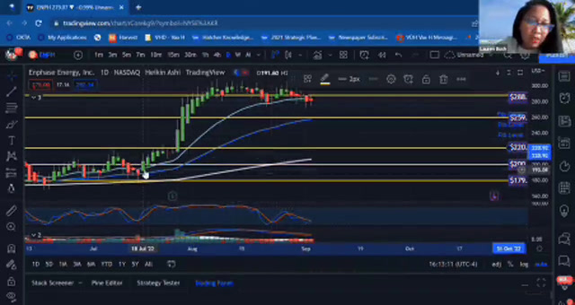

Explain
Financial Education Explainer
On-camera explainer / financial education
A market-analysis lesson that keeps the technical material on screen while Lauren guides the audience through what matters.
← Back to Casting Sheet
What it shows
Make the complicated thing useful.
Lauren appears on camera while working through technical chart material, keeping the screen legible and the explanation human.
The proof is the translation: understanding the material well enough to guide somebody through it without flattening it.
Notes
Why it belongs here.
Financial education and market-analysis material are visible in the teaching environment.
Lauren stays visible as the guide rather than disappearing behind the screen.
Public-safe finance video and stills already preserved in the portfolio archive.
Next: Create
Keep going.
Next: authored product storytelling with concept, voice and edit in the same file.